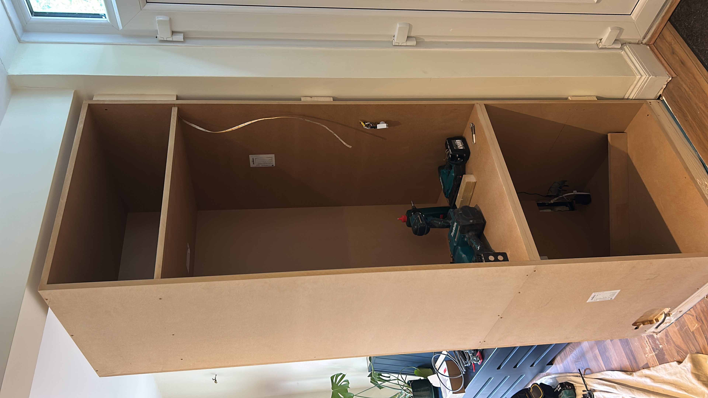
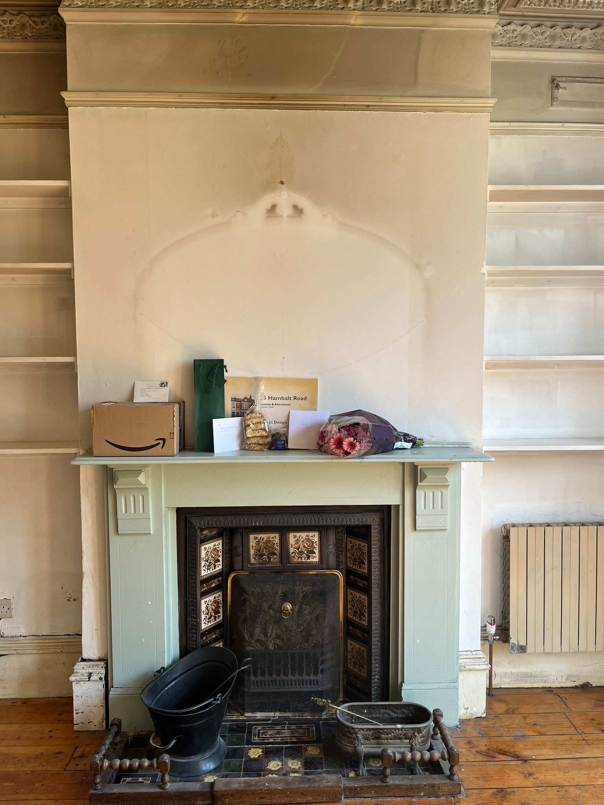
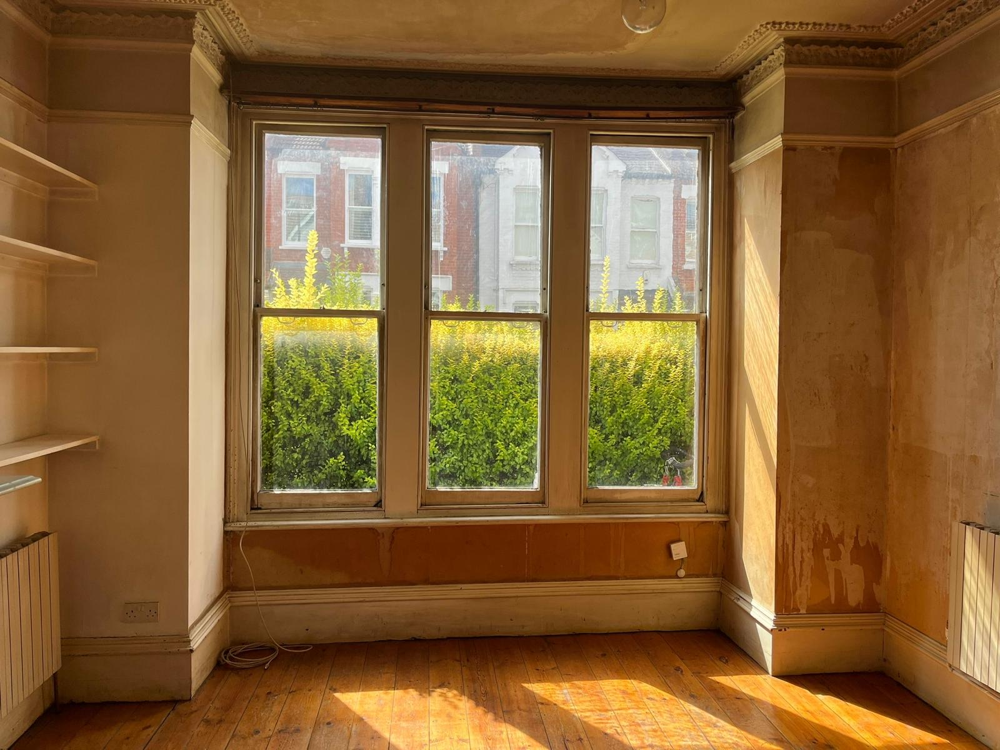
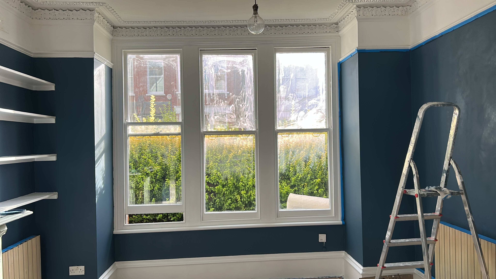
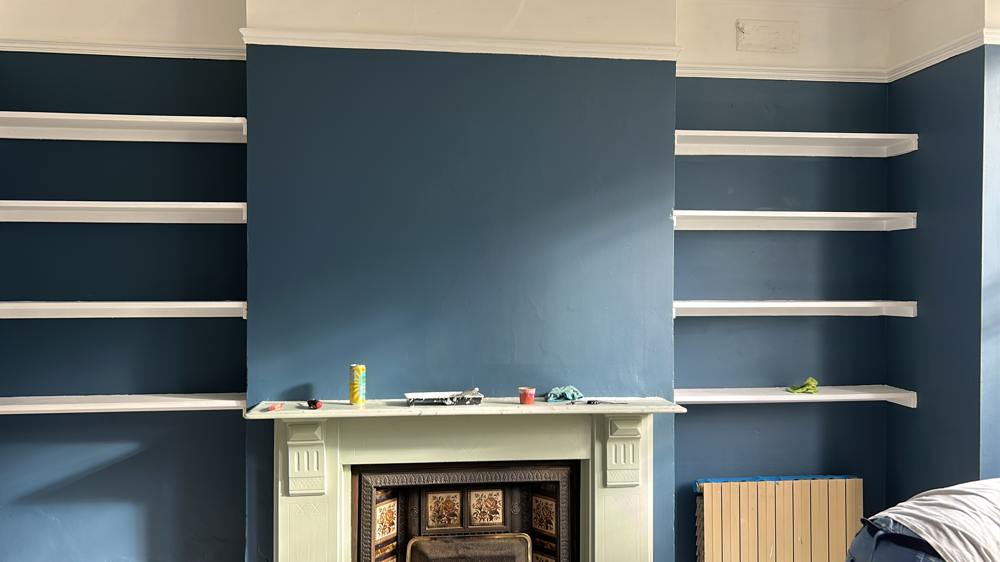
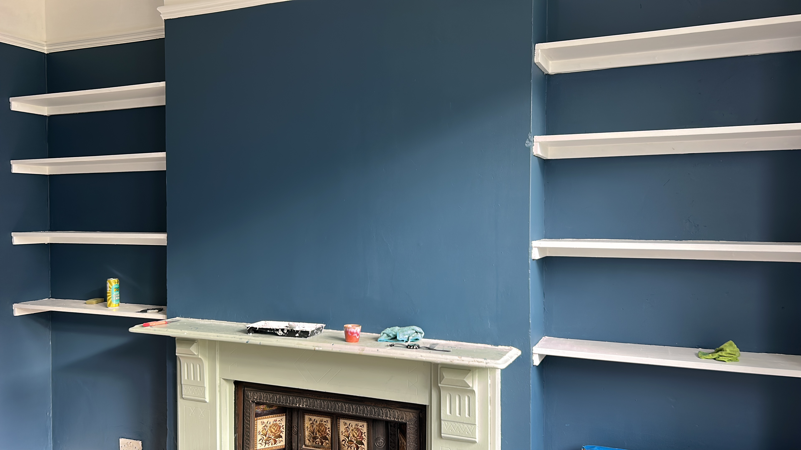

Painter & carpentry
Hands-on painting, decorating and joinery work across London.

In progress
A custom built-in cabinet in progress, designed to make practical use of an awkward interior space.
Painting & decorating
A room, repainted
A before, during and after record of repainting the room around the original fireplace and built-in shelving.
Before


During

After

